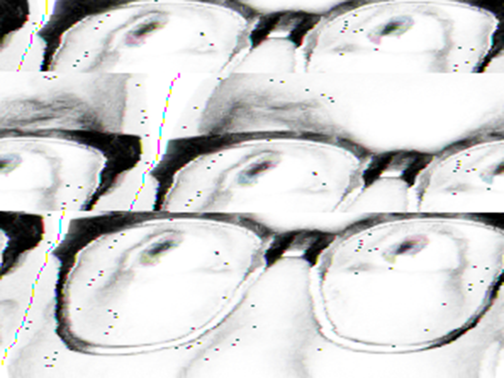
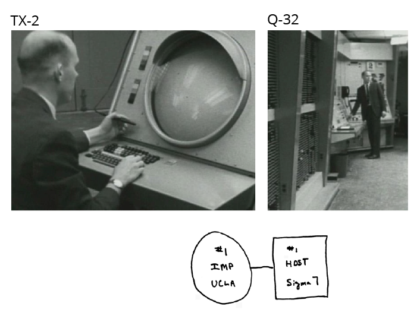
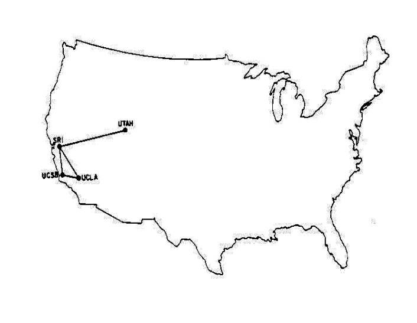
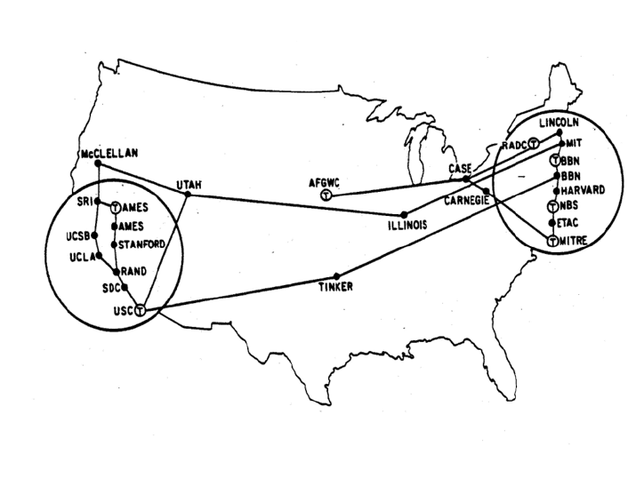
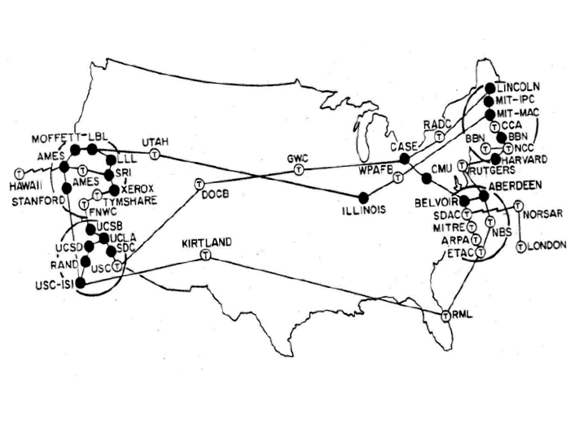

Internetstandaarden
Hoorcollege Blokweek 1
Le moi
Weekoverzicht Internetstandaarden
| HC | WG | |
|---|---|---|
| Blokweek 1 | CMD AAN! | CMD AAN! |
| Blokweek 2 | DE ZOEKTOCHT NAAR BETEKENIS - Semantiek HOE MAAK JE HTML OP - Praktisch DAT IS DOM! - HTML basis UPLOAD – Publiceren van jouw website |
Drieluik oefening analyse
Tools Eerste website maken en online zetten |
| Blokweek 3 | ALGEMEEN BESCHAAFD HTML - Syntax vs. semantiek FUT (Frequently Used Tags) - Content structuur aangeven A BOX IN A BOX IN A BOX ... - Block vs. inline vs. invisible DON'T BELIEVE THE HYPE - nieuwe html5 elementen |
Huiswerk bespreken Criteria HTML Onderzoek menustijlen |
| Blokweek 4 | DIVIDE ET IMPERA – Scheiding vormgeving, inhoud en gedrag HOE PAS JE CSS TOE - Praktisch SELECTA – Hoe selecteer je elementen MOOIE DINGEN MAKEN - Over kleur en typografie |
FEEDBACKSESSIE HTML Demo one-column en two-column layout Wireframes schetsen |
| Blokweek 5 | LoVe HAte YOUR LINKS - Pseudo classes DE LEEGTE IS JE VRIEND - Box model LEG HET NEER - layout |
Vlakverdeling oefening Grove vlakverdeling met CSS |
| Blokweek 6 | IMAGINE THAT! – invoegen van afbeeldingen CSS3 FROM HELL – the perks and the prefix hell of CSS3 GOED GEDRAG WORDT BELOOND - Javascript intro |
FEEDBACKSESSIE CSS jQuery |
| Blokweek 7 | OVER HET SNEL DOCH SLORDIG INZETTEN VAN JAVASCRIPT - JQuery MANIPULEER JE DOM - Luisteren naar en inspelen op gebeurtenissen |
Werken aan eindopdracht |
| Blokweek 8 | Herfstreces | Herfstreces |
| Blokweek 9 | SYMPOSIUM: STUDENTEN PRESENTEREN VOORBEREIDING OP TENTAMEN VEELGESTELDE VRAGEN OVER WEBSITE |
Verplichte werkgroep! Elkaars website beoordelen. |
| Blokweek 10 | Toetsweek | Toetsweek - geen lessen |

Ninja learning 101
- Maak aantekeningen
- Verzin zelf studievragen
- Werk aantekeningen direct uit
- Print je aantekeningen in puntje 8
- Sorteer ze per vak
- Gebruik je downtime om te leren
In the Beginning, ARPA created the ARPANET. And the ARPANET was without form and void.
And darkness was upon the deep.
And the spirit of ARPA moved upon the face of the network and ARPA said, 'Let there be a protocol,' and there was a protocol. And ARPA saw that it was good.
And ARPA said, 'Let there be more protocols,' and it was so. And ARPA saw that it was good.
And ARPA said, 'Let there be more networks,' and it was so."
Danny Cohen

The Machine Stops - E.M. Forster
"Very well. Let us talk, I will isolate myself. I do not expect anything important will happen for the next five minutes-for I can give you fully five minutes, Kuno. Then I must deliver my lecture on Music during the Australian Period.”
[...]
But it was fully fifteen seconds before the round plate that she held in her hands began to glow. A faint blue light shot across it, darkening to purple, and presently she could see the image of her son, who lived on the other side of the earth, and he could see her.
[...]
Vashanti’s next move was to turn off the isolation switch, and all the accumulations of the last three minutes burst upon her. The room was filled with the noise of bells, and speaking-tubes. What was the new food like? Could she recommend it? Has she had any ideas lately? Might one tell her one"s own ideas? Would she make an engagement to visit the public nurseries at an early date? - say this day month.
[...]
The clumsy system of public gatherings had been long since abandoned; neither Vashti nor her audience stirred from their rooms. Seated in her armchair she spoke, while they in their armchairs heard her, fairly well, and saw her, fairly well.
1965: Eerste verbinding
1969: Internet telt 4 hosts
1972: Internet telt ~25 hosts
1974: Internet telt ~44 hosts
1983: Overgang naar TCP/IP
50.000 netwerken op 7 continenten en in de ruimte
- MFENET
- BITNET
- HEPNET
- USENET
- UUNET
- DECNet
- SPAN
- CSNET
- JANET
- CO+RE
1989: Tim Berners-Lee @ CERN

1992: World Wide Web Consortium (W3C)
Accessibility (All), Accessible Rich Internet Applications (WAI-ARIA), Authoring Tool Accessibility Guidelines (ATAG), Best Practices for Authoring HTML, CC/PP, Content Transformation, CSS, CSS Mobile, DCCI, Declarative Web Applications, Device Description Repository, Device Independence Authoring, DOM, DOM events, Efficient XML Interchange, eGovernment, Electronic Commerce Evaluation and Report Language (EARL), Geospatial, GRDDL, Health Care and Life Sciences (Semantic Web), HTML, HTML for User Agents, HTTP, InkML, Internationalization (All), Internationalization of Web Architecture, Internationalization of Web Design and Applications, Internationalization of Web Services, Internationalization of XML, Javascript APIs, MathML, Media Access, Mobile Web Applications, Mobile Web Authoring, Mobile Web for Social Development, Multimodal Web Applications, OWL Web Ontology Language, P3P, PICS, Plugins, PNG, POWDER, Quality Assurance (QA) Framework, RDF, RDF Best Practices, RDF Relationship to Other Formats, RDFa, RIF Rule Interchange Format, Security for User Agents, Security for Web Applications, Semantic Annotation for WSDL and XML Schema, Service Modeling Language (SML), SKOS, SMIL, SOAP, SPARQL, Stylesheets in XML, SVG, SVG Tiny, Timed Text, URI, User Agent Accessibility Guidelines (UAAG), Voice, Web and TV, Web Architecture, Web Content Accessibility Guidelines (WCAG), Web Fonts, Web IDL, Web Services Addressing, Web Services Architecture, Web Services Choreography, Web Services Policy, Web Services Resource Access, WebCGM, WICD, Widgets, WSDL, XBL, Xforms, XHTML, XHTML 2, XHTML For Mobile, XHTML Modularization, Xinclude, XKMS, XLink, XML, XML Base, XML Canonicalization, XML Design Techniques, XML Encryption, XML Events, XML Fragments, XML Pipeline (XProc), XML Relationship to other formats, XML Schema, XML Signature, XML-binary Optimized Packaging, xml:id, XPath, XPointer, XQuery, XSL-FO, XSLT
De zoektocht naar betekenis
Over semantiek
- leer van de betekenis van de woorden en woordgroepen
- betekenisverwante termen:
hyperoniem: taalkunde
synoniem(en): betekenisleer
- betekenisverwante termen:
- (filosofie) leer van de interpretatie van formele systemen
- betekenisverwante termen:
hyperoniem: leer
- betekenisverwante termen:


Opmaken vs. Markup
Een overzicht van structuur en semantiek in HTML

Basis
<p>...</p>
Structuur
<!DOCTYPE html> <html> <head> <title>Skeleton Code</title> <meta http-equiv="Content-type" content="text/html;charset=UTF-8" /> <meta name="author" content="Justus Sturkenboom @ CMDA" /> <meta name="keywords" content="Skeleton code" /> <meta name="description" content="A basic HTML5 skeleton code" /> </head> <body> <!-- Hier de inhoud van de webpagina --> </body> </html>
Semantiek
[...] <body> <!-- Hier de inhoud van de webpagina --> <article> <h1>Another space - Richard Smith</h1> <blockquote>Il y a un autre espace, figural. Il faut le supposer enfoui, il ne se donne pas à voir, ni à penser, il s’indique de façon latérale, fugitive au sein des discours et des perceptions, comme ce qui les trouble. Il est l’espace propre au désir, l’enjeu de la lutte que les peintres et les poètes ne cessent de mener contre le retour de l’Ego et du texte. <cite>(Jean-François Lyotard, Discours, Figure: 135)</cite></blockquote> <p>[...]</p> </article> </body> [...]
Frequently Used Tags

Dit is DOM
Het Document Object Model

Nesten
Nesten in een boom, DOM?

Samenvatting
- Het internet stamt uit de jaren '60 van de vorige eeuw
- Tim Berners-Lee bedacht HTML om documenten uit te wisselen
- Semantiek gaat over waardetoekenning
- Er bestaan een hoop standaarden
- HTML is de standaard voor opmaken (markup) van tekst op internet (hypertext)
- HTML kent een vaste structuur
- block vs. inline vs. none
- HTML moet je netjes nesten
- Nesten in een boom zijn DOM
Studievragen
- Wat doet een validator (bijvoorbeeld de W3CValidation extension in Brackets)?
- Wat is het verschil tussen syntactische en semantische fouten in je HTML-code?
- Welke elementen worden gebruikt om een menu in HTML te maken?
- Noem minstens 12 veelgebruikte HTML elementen?
- Wat is het verschil tussen block-level en inline elementen?
- Wat bedoelt Justus met 'macro', 'meso' en 'micro' elementen?
Huiswerk
Uit HTML & CSS: Lees de hoofdstukken 3 en 4